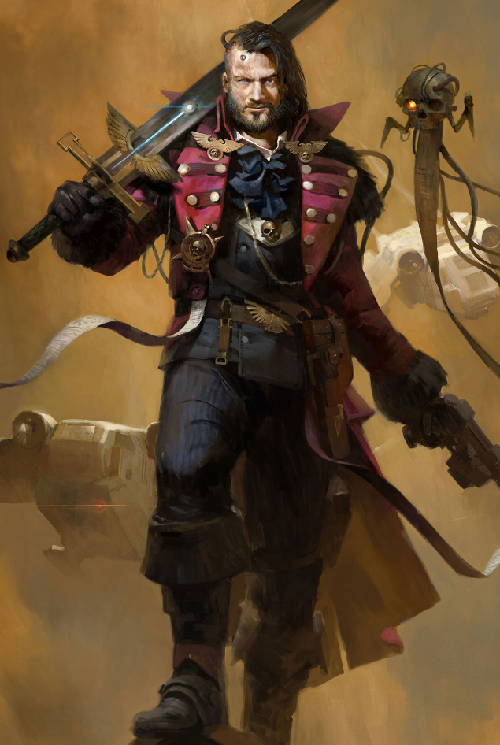

Dossier Archivistique 449.M41
Les Rogue Traders avancent là où l’autorité impériale devient mince, fragile, presque théorique. Aux frontières de la carte connue, ils portent l’aquila dans des régions où aucun gouverneur, aucun prêtre et aucun régiment ne survivrait longtemps seul.
Ils ne sont pas de simples marchands. Ils sont des seigneurs errants, des explorateurs armés, des négociateurs dangereux et parfois des conquérants. Leur mandat leur accorde une liberté que peu de serviteurs de l’Imperium peuvent même imaginer.

FONCTION IMPÉRIALE
Cette liberté est autant une arme qu’une menace. Le Rogue Trader traite avec des mondes oubliés, des civilisations mineures, des puissances xenos et des zones que les archives impériales marquent parfois d’un simple avertissement. Il avance là où l’ignorance tue plus vite que le feu ennemi.
Chaque dynastie possède ses propres vaisseaux, ses propres serments, ses propres secrets. Certaines servent l’Imperium avec une loyauté brutale. D’autres flirtent dangereusement avec l’hérésie, l’avidité ou des alliances qu’aucun tribunal ne tolérerait en territoire impérial central.
Leurs expéditions découvrent des routes, des reliques, des mondes vierges ou des horreurs qui auraient dû rester enterrées. À chaque retour, ils rapportent autant de richesses que de risques. Une cargaison mal contrôlée peut valoir une fortune. Elle peut aussi condamner un spatioport entier.
Les équipages des Rogue Traders sont rarement ordinaires. Mercenaires, serviteurs, soldats privés, savants douteux, missionnaires, mutants tolérés et spécialistes aux loyautés variables se croisent dans leurs coursives. Une telle diversité serait suspecte ailleurs. Dans leurs flottes, elle devient outil.
DOGME ET DEVOIR
Là réside toute l’ambiguïté de leur fonction. L’Imperium les tolère parce qu’il a besoin d’eux. Ils percent les frontières, ouvrent les routes, identifient les menaces et étendent parfois l’influence humaine avant même que l’Administratum sache quoi nommer.
Mais un Rogue Trader trop ambitieux peut devenir un problème d’une ampleur considérable. Il possède des hommes, des armes, des vaisseaux, des contacts et souvent assez d’orgueil pour croire que son mandat le place au-dessus de toute surveillance.
L’Inquisition rappelle pourtant une vérité simple. Aucun titre ne protège de la corruption. Aucun sceau ne rend l’âme invulnérable. Plus un homme s’éloigne de Terra, plus il devient facile pour lui de confondre autonomie et impunité.
Les Rogue Traders sont donc à la fois éclaireurs, instruments et risques. Ils portent l’Imperium au-delà de ses frontières, mais ils rapportent parfois avec eux ce qui aurait dû rester dans les ténèbres.
HÉRITAGE AU SERVICE DU TRÔNE
Toute dynastie opérant en marge de l’espace impérial doit être observée. Ses cargaisons contrôlées. Ses alliances vérifiées. Ses journaux de bord examinés. La loyauté proclamée ne suffit jamais.
Fin de l’extrait. Les frontières de l’Imperium attirent autant les héros que les damnés.